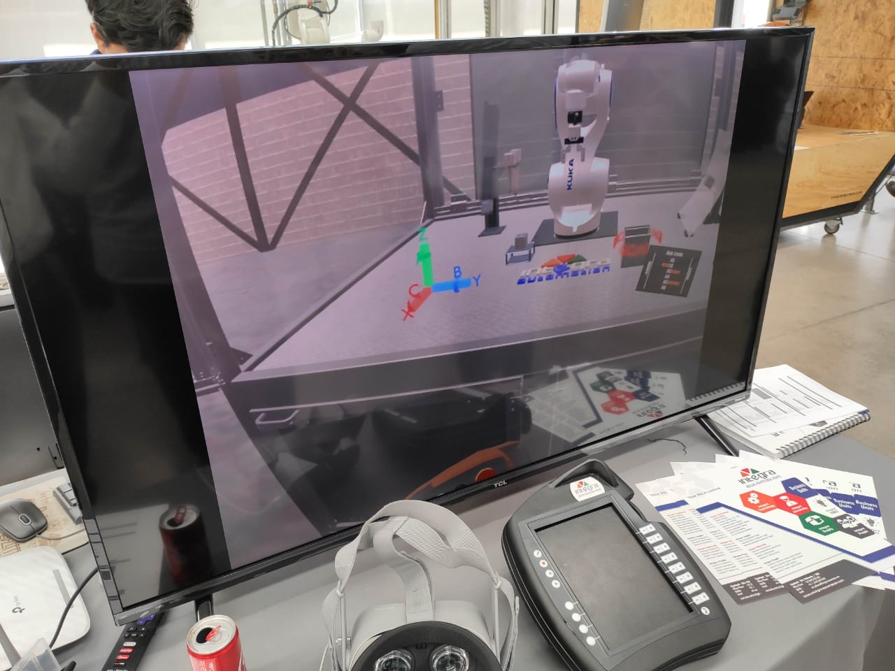

Punpun Jump
Un videojuego 2D para móviles inspirado en el juego "Doodle Jump" y la popular obra de manga "Oyasumi Punpun" de Inio Asano.
Leer másProyecto realizado en Unity utilizando Realidad Virtual para simular y capacitar personal industrial para operar un robot "KUKA" para la empresa " Integra Automation".
Nota: Lamentablemente, ya que se trata de un proyecto interno de una empresa, no me hes permitido compartir imagenes específicas del producto pero puedo dar nota de lo que hizo.
Dentro de la industria muchas veces, al momento de llegar nuevo personal operario estos pasan por un periodo de capacitación, la cual conlleva a que tomen cursos tanto teoricos como prácticos para la correcta manipulacion de de las máquinas existentes en dicha industria. Esto conlleva a que un personal altamente capacitado sea el encargado de repartir dichas capacitaciones. Es aquí donde se encuentran pequeños problemas ya que al ser así, es necesario detener por un tiempo la productividad del falicitador del curso y esto a su vez genera un retraso de actividades.
Es aquí cuando la Celda de capacitación KUKA toma manos en el asunto, siendo un producto que, haciendo uso de la tegnología de Realidad Virtual busca lograr una completa serie de cursos tanto teoricos como prácitos para que los operarios en capacitación puedan ser autotidactas en ese aspecto. Puesto que el programa sirve como una clase teorica el usuario adquiere los conocimientos tecnicos necesarios para el entendimiento del entorno, para seguido de eso, hacer uso de la parte práctica del programa, donde el usario podrá operar de manera virtual una copia exacta del robot KUKA ayudado de un control especialmente diseñado para el uso del mismo.